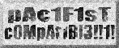

MONO-MENTAL!!!!
aTaR1 sTfM/sT3/fAlC0n 0nLy!!!1!
Released: 8 Apr 1998 22:47!!!!

A multipart mono demo on the Hasbro JTFM/JTE/FACLON!
")
Why? because it's the FIRST PROPER MONOCHROME MULTIPART DEMO!!!
Yes, it's true demo fans, you can do a demo in MONO!!!!
Everything in this demo is in mono, even the music!! And we've even added a themy thingy!! Go fast forward to the yesteryears of the back of your mind!!! Now you don't need to rent those old TV videos cause we've got them all here!
This demo is released at the ALT party at Easter 1998!!
It got 6 points in the compo!!!!!!!!!!!!!!!!!!!!
Bye!